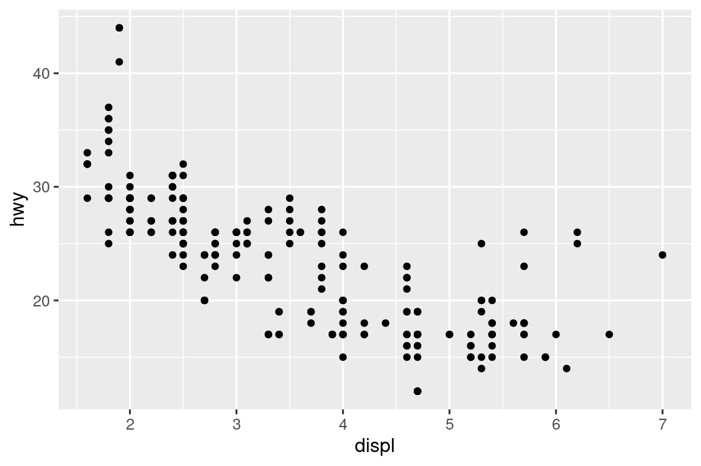

---
title: "Diamond sizes"
date: 2022-09-12
format: html
---
```{r}
#| label: setup
#| include: false
library(tidyverse)
smaller <- diamonds |>
filter(carat <= 2.5)
```
We have data about `r nrow(diamonds)` diamonds.
Only `r nrow(diamonds) - nrow(smaller)` are larger than 2.5 carats.
The distribution of the remainder is shown below:
```{r}
#| label: plot-smaller-diamonds
#| echo: false
smaller |>
ggplot(aes(x = carat)) +
geom_freqpoly(binwidth = 0.01)
```28 Quarto
28.1 Εισαγωγή
Το Quarto παρέχει ένα ενοποιημένο πλαίσιο συγγραφής για την επιστήμη δεδομένων, συνδυάζοντας τον κώδικά σας, τα αποτελέσματά του και το κείμενο σας. Τα έγγραφα Quarto είναι πλήρως αναπαράξιμα και υποστηρίζουν εύρος αρχείων εξόδου, όπως PDF, αρχεία Word, παρουσιάσεις και άλλα.
Τα αρχεία Quarto έχουν σχεδιαστεί για να χρησιμοποιούνται με τρεις τρόπους:
Για επικοινωνία με τους υπεύθυνους για τη λήψη αποφάσεων, οι οποίοι θέλουν να εστιάσουν στα συμπεράσματα της ανάλυσης, κι όχι στον κώδικα πίσω από αυτήν.
Για συνεργασία με άλλους επιστήμονες δεδομένων (συμπεριλαμβανομένου και του μελλοντικού σας εαυτού), οι οποίοι ενδιαφέρονται τόσο στα συμπεράσματα σας, όσο και στο πως καταλήξατε σε αυτά (δηλαδή στον κώδικα σας).
Ως ένα περιβάλλον στο οποίο μπορείτε να ασκείτε την επιστήμη των δεδομένων, ένα σύγχρονο τετράδιο εργαστηρίου, στο οποίο καταγράφετε όχι μόνο ότι κάνατε, αλλά και τι σκεφτόσασταν.
Το Quarto είναι ένα εργαλείο διεπαφής που βασίζεται σε γραμμή εντολών, κι όχι ένα πακέτο R. Αυτό σημαίνει ότι η εύρεση βοηθητικού υλικού, κατά πλειοψηφία, μη διαθέσιμη με τον τελεστή ?. Αντί γι αυτό, καθώς δουλεύετε στη διάρκεια αυτό του κεφαλαίου, αλλά και όταν θα χρησιμοποιείτε το Quarto στο μέλλον, είναι καλύτερο να αναφέρεστε στο εγχειρίδιο του Quarto.
Εάν είστε χρήστης του R Markdown, μπορεί να σκέφτεστε “Το Quarto ακούγεται πολύ σαν το R Markdown”. Και δεν κάνετε λάθος! Το Quarto ενοποιεί τη λειτουργικότητα πολλών πακέτων από το οικοσύστημα του R Markdown (rmarkdown, bookdown, distill, xaringan, κ.λπ.) σε ένα ενιαίο, συνεπές σύστημα και το επεκτείνει με εγγενή υποστήριξη για πολλές γλώσσες προγραμματισμού όπως η Python και η Julia εκτός από την R. Κατά κάποιο τρόπο, το Quarto αντικατοπτρίζει όλα όσα μάθαμε από την επέκταση και την υποστήριξη του οικοσυστήματος του R Markdown για μία δεκαετία.
28.1.1 Προαπαιτούμενα
Χρειάζεστε τη διεπαφή γραμμής εντολών του Quarto (Quarto CLI), αλλά δεν χρειάζεται να την εγκαταστήσετε ή να την φορτώσετε, καθώς το RStudio κάνει αυτόματα και τα δύο όταν χρειάζεται.
28.2 Βασικά στοιχεία του Quarto
Αυτό είναι ένα αρχείο Quarto – ένα απλό αρχείο κειμένου με την κατάληξη .qmd στο όνομα του:
Περιέχει τρεις σημαντικούς τύπους περιεχομένου:
- Μία (προαιρετική) YAML κεφαλίδα που περιβάλλεται από
---. -
Τμήματα κώδικα R που περιβάλλονται από
```. - Κείμενο μαζί με απλό κείμενο που περιέχει μορφοποιήσεις, όπως για παράδειγμα
# headingκαι_italics_.
Το Σχήμα 28.1 παρουσιάζει ένα .qmd έγγραφο στο RStudio με διεπαφή σημειωματαρίου, όπου ο κώδικας και το αποτέλεσμα του παρεμβάλλονται. Μπορείτε να εκτελέσετε κάθε κομμάτι κώδικα κάνοντας κλικ στο εικονίδιο Run (Εκτέλεση, μοιάζει με κουμπί αναπαραγωγής στο επάνω μέρος του τμήματος - chunk) ή πατώντας Cmd/Ctrl + Shift + Enter. Το RStudio εκτελεί τον κώδικα και εμφανίζει τα αποτελέσματα

Εάν δεν σας αρέσει να βλέπετε τα διαγράμματα και το αποτέλεσμα του κώδικα σας ως μέρος του εγγράφου σας και προτιμάτε να χρησιμοποιήσετε την Κονσόλα και τα παράθυρα Plot του RStudio, μπορείτε να κάνετε κλικ στο εικονίδιο με το γρανάζι δίπλα στο “Render” και να μεταβείτε στο “Chunk Output in Console”, όπως φαίνεται στο Σχήμα 28.2.

Για να δημιουργήσετε μία πλήρη αναφορά που περιέχει όλο το κείμενο, τον κώδικα και τα αποτελέσματα, πατήστε την επιλογή “Render” ή πατήστε Cmd/Ctrl + Shift + K. Μπορείτε επίσης να το κάνετε και προγραμματιστικά, με την εντολή quarto::quarto_render("diamond-sizes.qmd"). Αυτή θα εμφανίσει την αναφορά στο παράθυρο προβολής όπως φαίνεται στο Σχήμα 28.3 και θα δημιουργήσει ένα αρχείο HTML.

Όταν δημιουργείτε το έγγραφο εξόδου, το Quarto στέλνει το αρχείο .qmd στη knitr, https://yihui.org/knitr/, η οποία εκτελεί όλα τα κομμάτια κώδικα και δημιουργεί ένα νέο αρχείο markdown (.md) που περιλαμβάνει τον κώδικα σας και το αποτέλεσμα του. Στη συνέχεια, το αρχείο markdown που δημιουργείται από τη knitr επεξεργάζεται από την pandoc, https://pandoc.org, η οποία είναι υπεύθυνη για τη δημιουργία του ολοκληρωμένου αρχείου. Αυτή η διαδικασία παρουσιάζεται στο Σχήμα 28.4. Το πλεονέκτημα αυτής της ροής εργασίας δύο βημάτων είναι ότι μπορείτε να δημιουργήσετε ένα πολύ ευρύ φάσμα μορφών εξόδου, όπως θα μάθετε στο Κεφάλαιο 29.

Για να αρχίσετε με το δικό σας .qmd αρχείο, επιλέξτε File > New File > Quarto Document… στη γραμμή επιλογών. Το RStudio θα εκκινήσει έναν οδηγό που μπορείτε να χρησιμοποιήσετε για να συμπληρώσετε εκ των προτέρων το αρχείο σας με χρήσιμο περιεχόμενο που σας υπενθυμίζει πώς λειτουργούν τα βασικά στοιχεία του Quarto.
Οι ακόλουθες ενότητες εξετάζουν τα τρία στοιχεία ενός εγγράφου Quarto με περισσότερες λεπτομέρειες: το κείμενο markdown, τα τμήματα κώδικα και την κεφαλίδα YAML.
28.2.1 Ασκήσεις
Δημιουργήστε ένα νέο έγγραφο Quarto ακολουθώντας τα βήματα File > New File > Quarto Document. Διαβάστε τις οδηγίες. Εξασκηθείτε στο να τρέχετε τα τμήματα κώδικα μεμονωμένα. Στη συνέχεια, δημιουργήστε το τελικό έγγραφο εξόδου κάνοντας κλικ στο κατάλληλο κουμπί και, στη επαναλάβετε το, χρησιμοποιώντας αυτή την φορά την κατάλληλη συντόμευση πληκτρολογίου. Βεβαιωθείτε ότι μπορείτε να τροποποιήσετε τον κώδικα, να τον εκτελέσετε ξανά και να δείτε την τροποποιημένη έξοδο.
Δημιουργήστε ένα νέο έγγραφο Quarto για καθεμία από τις τρεις ενσωματωμένες μορφές: HTML, PDF και Word. Δημιουργήστε τα αρχεία εξόδου για κάθε μία από τις τρεις μορφές. Πώς διαφέρουν οι έξοδοι; Πώς διαφέρουν οι είσοδοι; (Μπορεί να χρειαστεί να εγκαταστήσετε το LaTeX για να δημιουργήσετε την έξοδο PDF — Το RStudio θα σας το ζητήσει εάν είναι απαραίτητο.)
28.3 Οπτικό πρόγραμμα επεξεργασίας (Visual editor)
Το οπτικό πρόγραμμα επεξεργασίας του RStudio παρέχει μία διεπαφή WYSIWYM για τη σύνταξη εγγράφων Quarto. Στο παρασκήνιο, το κείμενα αρχείων Quarto (αρχεία .qmd) είναι γραμμένα σε Markdown, ένα ελαφρύ σύνολο συμβάσεων για τη μορφοποίηση αρχείων απλού κειμένου. Στην πραγματικότητα, το Quarto χρησιμοποιεί Pandoc markdown (μια ελαφρώς εκτεταμένη έκδοση του Markdown που το Quarto κατανοεί), και περιλαμβάνει πίνακες, βιβλιογραφικές αναφορές, παραπομπές, υποσημειώσεων, divs/spans στοιχεία HTML, λίστες ορισμών, ορίσματα, ακατέργαστο HTML/TeX και πολλά άλλα καθώς και υποστήριξη για την εκτέλεση κελιών κώδικα και την προβολή της εξόδου τους ενσωματωμένη στο ίδιο αρχείο. Ενώ το Markdown έχει σχεδιαστεί για να είναι εύκολο στην ανάγνωση και τη γραφή, όπως θα δείτε στην Ενότητα 28.4, εξακολουθεί να απαιτεί την εκμάθηση ενός νέου τρόπου σύνταξης. Επομένως, εάν είστε νέος στα υπολογιστικά έγγραφα όπως τα αρχεία .qmd, αλλά έχετε εμπειρία στη χρήση εργαλείων όπως τα Έγγραφα Google ή το MS Word, ο ευκολότερος τρόπος για να ξεκινήσετε με το Quarto στο RStudio είναι το οπτικό πρόγραμμα επεξεργασίας.
Στο οπτικό πρόγραμμα επεξεργασίας μπορείτε είτε να χρησιμοποιήσετε τα κουμπιά στη γραμμή επιλογών για να εισάγετε εικόνες, πίνακες, παραπομπές κ.λπ., είτε μπορείτε να χρησιμοποιήσετε τις συντομεύσεις ⌘ + / ή Ctrl + /, για να εισάγετε σχεδόν οτιδήποτε. Εάν βρίσκεστε στην αρχή μιας γραμμής (όπως φαίνεται στο Σχήμα 28.5), μπορείτε επίσης να εισάγετε απλά / για να καλέσετε τη συντόμευση.
![Ένα έγγραφο Quarto που εμφανίζει διάφορα χαρακτηριστικά του οπτικού επεξεργαστή, όπως μορφοποίηση κειμένου (πλάγια, έντονη γραφή, υπογράμμιση, μικρά κεφαλαία, κώδικας, εκθέτης και δείκτης), επικεφαλίδες πρώτου έως τρίτου επιπέδου, λίστες με κουκκίδες και αριθμημένες λίστες, συνδέσμους, συνδεδεμένες φράσεις και εικόνες (μαζί με ένα αναδυόμενο παράθυρο για την προσαρμογή του μεγέθους της εικόνας, την προσθήκη λεζάντας και εναλλακτικού κειμένου, κ.λπ.), πίνακες με μια σειρά κεφαλίδας και το εργαλείο insert anything με επιλογές για την εισαγωγή ενός τμήματος κώδικα R, ένα τμήμα κώδικα Python, ένα div, μια λίστα κουκκίδων, μια αριθμημένη λίστα ή μια επικεφαλίδα πρώτου επιπέδου (αυτές είναι οι κορυφαίες επιλογές στο εργαλείο).](quarto/quarto-visual-editor.png)
Η εισαγωγή εικόνων και η προσαρμογή του τρόπου εμφάνισης τους διευκολύνεται επίσης με το οπτικό πρόγραμμα επεξεργασίας. Μπορείτε είτε να επικολλήσετε μία εικόνα από το πρόχειρο σας απευθείας στο οπτικό πρόγραμμα επεξεργασίας (και το RStudio θα τοποθετήσει ένα αντίγραφο αυτής της εικόνας στο μονοπάτι του project και θα το συνδέσει σε αυτό) είτε μπορείτε να χρησιμοποιήσετε το μενού Insert (Εισαγωγή) > Figure / Image (Εικόνα / Εικόνα) του προγράμματος οπτικής επεξεργασίας για να περιηγηθείτε στην εικόνα που θέλετε να εισάγετε ή να επικολλήσετε το URL που αντιστοιχεί στη διεύθυνση της. Επιπλέον, χρησιμοποιώντας το ίδιο μενού, μπορείτε να αλλάξετε το μέγεθος της εικόνας καθώς και να προσθέσετε μία λεζάντα, εναλλακτικό κείμενο και έναν σύνδεσμο.
Το οπτικό πρόγραμμα επεξεργασίας έχει πολλές περισσότερες δυνατότητες που δεν έχουμε αναφέρει εδώ και που μπορεί να σας φανούν χρήσιμες καθώς αποκτάτε εμπειρία συγγραφής με αυτό.
Και κυρίως, ενώ το οπτικό πρόγραμμα επεξεργασίας εμφανίζει το περιεχόμενό σας με μορφοποίηση, κάτω από την κουκούλα, αποθηκεύει το περιεχόμενό σας σαν απλό Markdown και μπορείτε να κάνετε εναλλαγή μεταξύ του οπτικού προγράμματος επεξεργασίας και του προγράμματος επεξεργασίας πηγαίου κώδικα για να προβάλετε και να επεξεργαστείτε το περιεχόμενό σας χρησιμοποιώντας οποιοδήποτε εργαλείο.
28.3.1 Ασκήσεις
- Δημιουργήστε ξανά το έγγραφο που απεικονίζεται στο Σχήμα 28.5 χρησιμοποιώντας το οπτικό πρόγραμμα επεξεργασίας.
- Χρησιμοποιώντας το οπτικό πρόγραμμα επεξεργασίας, εισάγετε ένα τμήμα κώδικα χρησιμοποιώντας το μενού Εισαγωγής (Insert) και, στη συνέχεια, το εργαλείο εισαγωγής οποιουδήποτε στοιχείου.
- Χρησιμοποιώντας το οπτικό πρόγραμμα επεξεργασίας, μάθετε πώς να:
- Προσθέτετε μία υποσημείωση.
- Προσθέτετε έναν οριζόντιο οδηγό.
- Προσθέτετε ένα μπλοκ εισαγωγικών (block quote).
- Στο οπτικό πρόγραμμα επεξεργασίας, μεταβείτε στο Insert > Citation και εισάγετε μία αναφορά στο άρθρο με τίτλο Welcome to the Tidyverse χρησιμοποιώντας το DOI του ( ψηφιακό αναγνωριστικό αντικειμένου), το οποίο είναι 10.21105/joss.01686. Αποδώστε το τελικό έγγραφο εξόδου και παρατηρήστε πώς εμφανίζεται η αναφορά σε αυτό. Ποια αλλαγή παρατηρείτε στο YAML του εγγράφου σας;
28.4 Πρόγραμμα επεξεργασία πηγαίου κώδικα
Ακόμη, μπορείτε να επεξεργαστείτε έγγραφα Quarto χρησιμοποιώντας το πρόγραμμα επεξεργασίας πηγαίου κώδικα στο RStudio, χωρίς τη βοήθεια του προγράμματος οπτικής επεξεργασίας. Ενώ το προγράμματος οπτικής επεξεργασίας θα φαίνεται οικείο σε όσους έχουν εμπειρία στη σύνταξη σε εργαλεία όπως τα έγγραφα Google, το πρόγραμμα επεξεργασίας πηγαίου κώδικα θα φαίνεται πιο οικείο σε όσους έχουν εμπειρία στη σύνταξη αρχείων κώδικα R ή εγγράφων R Markdown. Το πρόγραμμα επεξεργασίας πηγαίου κώδικα μπορεί επίσης να είναι χρήσιμο για τον εντοπισμό οποιωνδήποτε συντακτικών σφαλμάτων Quarto, καθώς συχνά είναι πιο εύκολο να τα εντοπίσετε μέσα σε απλό κείμενο.
Ο παρακάτω οδηγός δείχνει πώς να χρησιμοποιήσετε το Markdown του Pandoc για τη σύνταξη εγγράφων Quarto στο πρόγραμμα επεξεργασίας πηγαίου κώδικα.
## Text formatting
*italic* **bold** ~~strikeout~~ `code`
superscript^2^ subscript~2~
[underline]{.underline} [small caps]{.smallcaps}
## Headings
# 1st Level Header
## 2nd Level Header
### 3rd Level Header
## Lists
- Bulleted list item 1
- Item 2
- Item 2a
- Item 2b
1. Numbered list item 1
2. Item 2.
The numbers are incremented automatically in the output.
## Links and images
<http://example.com>
[linked phrase](http://example.com)
{fig-alt="Quarto logo and the word quarto spelled in small case letters"}
## Tables
| First Header | Second Header |
|--------------|---------------|
| Content Cell | Content Cell |
| Content Cell | Content Cell |Ο καλύτερος τρόπος για να μάθετε αυτά τα εργαλεία είναι απλά να τα δοκιμάσετε. Θα πάρει μερικές ημέρες, αλλά σύντομα θα σας γίνει δεύτερη φύση, και δεν θα χρειάζεται ούτε καν να τα σκεφτείτε. Και εάν ξεχνάτε, μπορείτε να έχετε έναν εύχρηστο οδηγό αναφοράς με το Help > Markdown Quick Reference.
28.4.1 Ασκήσεις
Εξασκήστε ό,τι έχετε μάθει δημιουργώντας ένα σύντομο βιογραφικό σημείωμα (CV). Ο τίτλος θα πρέπει να είναι το όνομα σας και θα πρέπει να συμπεριλάβετε ως κεφαλίδες (τουλάχιστον) την εκπαίδευση ή το εργασιακά σας ιστορικό. Κάθε μία από τις ενότητες θα πρέπε να περιλαμβάνει μία λίστα με τις δουλειές ή τα πτυχία σας. Δώστε έμφαση στην χρονολογία, χρησιμοποιώντας έντονη γραμματοσειρά (bold).
-
Χρησιμοποιώντας το πρόγραμμα επεξεργασίας πηγαίου κώδικα και τον οδηγό αναφοράς του Markdown, βρείτε πως να:
- Προσθέσετε μία υποσημείωση.
- Προσθέσετε ένα οριζόντιο χάρακα.
- Προσθέτετε ένα μπλοκ εισαγωγικών (block quote).
Αντιγράψτε κι επικολλήστε τα περιεχόμενα του
diamond-sizes.qmdαπό το διεύθυνση https://github.com/hadley/r4ds/tree/main/quarto σε ένα τοπικό έγγραφο R Quarto. Ελέγξτε ότι μπορείτε να το εκτελέσετε, και στη συνέχει προσθέστε κείμενο μετά το πολύγωνο συχνοτήτων, που περιγράφει τα πιο εμφανή του χαρακτηριστικά.Δημιουργήστε ένα έγγραφο σε μορφή Google doc ή MS Word (ή εντοπίστε ένα έγγραφο που έχετε δημιουργήσει στο παρελθόν) που περιέχει κάποια περιεχόμενο μέσα του, όπως κεφαλίδες, υπερσυνδέσμους, μορφοποιημένο κείμενο, κλπ. Αντιγράψτε τα περιεχόμενα αυτού του εγγράφου και επικολλήστε τα σε ένα έγγραφο Quarto στο πρόγραμμα οπτικής επεξεργασίας. Στη συνέχεια, μεταβείτε στο πρόγραμμα επεξεργασία πηγαίου κώδικα και παρατηρήστε τον πηγαίο αυτό κώδικα.
28.5 Τμήματα κώδικα
Για να εκτελέσετε κώδικα μέσα σε ένα έγγραφο Quarto, πρέπει να εισάγετε ένα τμήμα κώδικα Υπάρχουν τρεις τρόποι για να γίνει αυτό:
Η συντόμευση πληκτρολογίου Cmd + Option + I / Ctrl + Alt + I.
Το κουμπί “Insert” στη γραμμή εργαλείων του προγράμματος επεξεργασίας.
Πληκτρολογώντας με μη αυτόματο τρόπο τους οριοθέτες τμημάτων
```{r}και```.
Σας συνιστούμε να μάθετε τη συντόμευση πληκτρολογίου. Θα σας εξοικονομήσει πολύ χρόνο μακροπρόθεσμα!
Μπορείτε να συνεχίσετε να εκτελείτε τον κώδικα χρησιμοποιώντας τη συντόμευση πληκτρολογίου που μέχρι τώρα (ελπίζουμε!) γνωρίζετε και αγαπάτε: Cmd/Ctrl + Enter. Ωστόσο, τα τμήματα κώδικα έχουν μία νέα συντόμευση πληκτρολογίου: Cmd/Ctrl + Shift + Enter, η οποία εκτελεί όλο τον κώδικα στο τμήμα αυτό. Σκεφτείτε ένα τμήμα σαν συνάρτηση. Ένα τμήμα θα πρέπει να είναι σχετικά αυτοτελές και να εστιάζει σε μία μεμονωμένη εργασία.
Οι ακόλουθες ενότητες περιγράφουν την κεφαλίδα τμήματος που αποτελείται από ```{r}, ακολουθούμενη από μία προαιρετική ετικέτα τμημάτων και διάφορες άλλες επιλογές, η καθεμία στη δική της γραμμή, επισημειωμένη με #|.
28.5.1 Σήμανση τμημάτων κώδικα
Προαιρετικά, τα τμήματα κώδικα μπορούν να λάβουν μία επισήμανση/ετικέτα, για παράδειγμα:
```{r}
#| label: simple-addition
1 + 1
```#> [1] 2Αυτό προσφέρει τρία πλεονεκτήματα:
-
Μπορείτε να πλοηγηθείτε πιο εύκολα σε συγκεκριμένα τμήματα κώδικα χρησιμοποιώντας το αναπτυσσόμενο παράθυρο πλοήγησης κώδικα στο κάτω αριστερό μέρος του παραθύρου επεξεργασίας αρχείων κώδικα:
Τα γραφικά που παράγονται από τα τμήματα κώδικα θα έχουν χρήσιμα ονόματα που διευκολύνουν την αναφορά και χρήση τους σε άλλα σημεία. Θα δείτε περισσότερα γι’ αυτό στην Ενότητα 28.6.
Μπορείτε να δημιουργήσετε δίκτυα τμημάτων κώδικα που αποθηκεύονται στην κρυφή μνήμη για να αποφύγετε την εκ νέου εκτέλεση ακριβών υπολογισμών σε κάθε εκτέλεση. Περισσότερα για αυτό στην Ενότητα 28.8.
Οι ετικέτες σας θα πρέπει να είναι σύντομες αλλά εύκολο να τις θυμηθείτε και να μην περιέχουν κενά. Συνιστούμε να χρησιμοποιείτε παύλες (-) για να διαχωρίσετε λέξεις (αντί για κάτω παύλες, _) και να αποφύγετε άλλους ειδικούς χαρακτήρες σε ετικέτες.
Γενικά, είστε ελεύθεροι να επισημάνετε το τμήμα κώδικα σας όπως θέλετε, ωστόσο υπάρχει ένα όνομα τμήματος που συνεπάγεται ειδική συμπεριφορά: το setup. Όταν βρίσκεστε σε λειτουργία σημειωματαρίου, το τμήμα με το όνομα setup θα εκτελείται αυτόματα μία φορά, πριν εκτελεστεί οποιοσδήποτε άλλος κώδικας.
Επιπλέον, οι ετικέτες τμημάτων δεν μπορούν να επαναχρησιμοποιούνται/είναι διπλότυπες. Κάθε ετικέτα κομματιού πρέπει να είναι μοναδική.
28.5.2 Επιλογές τμημάτων κώδικα
Η έξοδος τμημάτων κώδικα μπορεί να προσαρμοστεί με επιλογές, πεδία που παρέχονται στην κεφαλίδα των τμημάτων. Η knitr παρέχει σχεδόν 60 επιλογές που μπορείτε να χρησιμοποιήσετε για να προσαρμόσετε τα τμήματα του κώδικα σας. Εδώ θα καλύψουμε τις πιο σημαντικές επιλογές τμημάτων που θα χρησιμοποιείτε συχνά. Μπορείτε να δείτε την πλήρη λίστα στη διεύθυνση https://yihui.org/knitr/options.
Το πιο σημαντικό σύνολο επιλογών ελέγχει εάν το μπλοκ κώδικα εκτελείται και ποια αποτελέσματα θα συμπεριληφθούν στην τελική αναφορά:
Το
eval: falseαποτρέπει την αξιολόγηση του κώδικα. (Και προφανώς αν δεν εκτελεστεί ο κώδικας, δεν θα δημιουργηθούν αποτελέσματα). Αυτό είναι χρήσιμο για την εμφάνιση παραδειγμάτων κώδικα ή για την απενεργοποίηση ενός μεγάλου μπλοκ κώδικα χωρίς να πρέπει να μετατρέψετε κάθε γραμμή σε σχόλιο.Το
include: falseεκτελεί τον κώδικα, αλλά δεν εμφανίζει ούτε τον κώδικα, ούτε τα αποτελέσματα στο τελικό έγγραφο. Χρησιμοποιήστε αυτή την επιλογή για κώδικα με υποστηρικτικό ρόλο (setup) που δεν θέλετε να εμφανίζεται στην αναφορά σας.Το
echo: falseαποτρέπει την εμφάνιση κώδικα, αλλά όχι των αποτελεσμάτων του στο τελικό αρχείο. Χρησιμοποιήστε το όταν γράφετε αναφορές που απευθύνονται σε άτομα που δεν θέλουν να δουν τον υποκείμενο κώδικα R.Το
message: falseήwarning: falseαποτρέπει την εμφάνιση μηνυμάτων ή προειδοποιήσεων στο τελικό αρχείο.Το
results: hideαποκρύπτει το αποτέλεσμα, κι αντίστοιχα τοfig-show: hideκρύβει τα γραφήματα.Το
error: trueέχει σαν αποτέλεσμα ο κώδικας που παράγει το τελικό αρχείο να συνεχίσει να τρέχει, ακόμη κι αν το αντίστοιχο τμήμα κώδικα εμφανίσει σφάλμα. Αυτό είναι σπάνια κάτι που θέλετε να συμπεριλάβετε στην τελική έκδοση της αναφοράς σας, αλλά μπορεί να είναι πολύ χρήσιμο εάν χρειάζεται να εντοπίσετε ακριβώς τι συμβαίνει μέσα στο.qmdαρχείο σας. Είναι επίσης χρήσιμο εάν διδάσκετε R και θέλετε να συμπεριλάβετε σκόπιμα ένα σφάλμα. Η προεπιλογήerror: falseπροκαλεί την αποτυχία της μετατροπής του τελικού αρχείου εάν υπάρχει έστω κι ένα σφάλμα στο έγγραφο.
Καθεμία από αυτές τις επιλογές προστίθεται στην κεφαλίδα του τμήματος κώδικα, ακολουθώντας το #|. Για παράδειγμα, στο επόμενο τμήμα το αποτέλεσμα δεν εκτυπώνεται επειδή το eval έχει οριστεί σε false.
```{r}
#| label: simple-multiplication
#| eval: false
2 * 2
```Ο παρακάτω πίνακας συνοψίζει ποιους τύπους ενεργειών καταστέλλει κάθε επιλογή:
| Επιλογή | Εκτέλεση | Εμφάνιση | Έξοδος | Διαγράμματα | Μηνύματα | Προειδοποιήσεις |
|---|---|---|---|---|---|---|
eval: false |
X | X | X | X | X | |
include: false |
X | X | X | X | X | |
echo: false |
X | |||||
results: hide |
X | |||||
fig-show: hide |
X | |||||
message: false |
X | |||||
warning: false |
X |
28.5.3 Καθολικές επιλογές
Καθώς εργάζεστε περισσότερο με την knitr, θα ανακαλύψετε ότι ορισμένες από τις προεπιλεγμένα χαρακτηριστικά των τμημάτων κώδικα δεν ταιριάζουν στις ανάγκες σας και θέλετε να τις αλλάξετε.
Αυτό μπορείτε να το κάνετε προσθέτοντας τις προτιμώμενες επιλογές σας στο YAML του εγγράφου, κάτω από την ενότητα execute. Για παράδειγμα, εάν ετοιμάζετε μία αναφορά για ένα κοινό που δεν χρειάζεται να δει τον κώδικά σας, αλλά μόνο τα αποτελέσματα και την ερμηνεία σας, μπορείτε να ορίσετε το echo: false σε επίπεδο εγγράφου. Αυτό θα αποκρύψει τον κώδικα, επομένως θα εμφανίζονται μόνο τα κομμάτια που επιλέγετε σκόπιμα να εμφανίσετε (θέτοντας echo: true στο αντίστοιχο τμήμα κώδικα). Ακόμη, μπορεί να σκεφτείτε να θέσετε τα message: false και warning: false, αλλά αυτό θα καθιστούσε δυσκολότερο τον εντοπισμό σφαλμάτων μιας και δεν θα βλέπατε κανένα μήνυμα στο τελικό έγγραφο.
title: "My report"
execute:
echo: falseΜιας και το Quarto έχει σχεδιαστεί για να είναι πολύγλωσσο (λειτουργεί με την R καθώς και με άλλες γλώσσες όπως η Python, η Julia κ.α.), δεν είναι όλες οι επιλογές της knitr διαθέσιμες σε επίπεδο εκτέλεσης εγγράφου, καθώς ορισμένες από αυτές λειτουργούν μόνο με την knitr και όχι άλλες μηχανές που χρησιμοποιεί το Quarto για την εκτέλεση κώδικα σε άλλες γλώσσες (π.χ. Jupyter). Μπορείτε, ωστόσο, να τις ορίσετε ως καθολικές επιλογές για το έγγραφό σας στο πεδίο knitr, στην κάτω από το opts_chunk. Για παράδειγμα, όταν γράφουμε βιβλία και σεμινάρια, θέτουμε:
title: "Tutorial"
knitr:
opts_chunk:
comment: "#>"
collapse: trueΑυτές οι επιλογές ακολουθούν τη μορφοποίηση σχολίων που προτιμάμε και διασφαλίζει ότι ο κώδικας και η έξοδος παραμένουν στενά συνδεδεμένα.
28.5.4 Ένθετος κώδικας
Υπάρχει ένας ακόμη τρόπος για να ενσωματώσετε τον κώδικα R σας σε ένα έγγραφο Quarto: απευθείας στο κείμενο, με την επιλογή: `r `. Αυτό μπορεί να είναι πολύ χρήσιμο εάν αναφέρετε ιδιότητες των δεδομένων σας στο κείμενο. Για παράδειγμα, το παράδειγμα εγγράφου που χρησιμοποιήθηκε στην αρχή του κεφαλαίου ανέφερε:
Έχουμε δεδομένα σχετικά με
`r nrow(diamonds)`διαμάντια . Μόνο`r nrow(diamonds) - nrow(smaller)`είναι μεγαλύτερα από 2.5 καράτια. Η κατανομή των υπολοίπων φαίνεται παρακάτω:
Όταν αποδίδεται η αναφορά, τα αποτελέσματα αυτών των υπολογισμών ενσωματώνονται στο κείμενο ως εξής:
Έχουμε στοιχεία σχετικά με 53940 διαμάντια. Μόνο τα 126 είναι μεγαλύτερα από 2.5 καράτια. Η κατανομή των υπολοίπων φαίνεται παρακάτω:
Όταν εισάγετε αριθμούς στο κείμενο, το format() είναι ο φίλος σας. Σας επιτρέπει να ορίσετε τον αριθμό των ψηφίων (digits) ώστε να μην εκτυπώνετε με παράλογο βαθμό ακρίβειας, ενώ το big.mark διευκολύνει την ανάγνωση των αριθμών. Μπορείτε να συνδυάσετε αυτές τις επιλογές σε μία βοηθητική συνάρτηση:
comma <- function(x) format(x, digits = 2, big.mark = ",")
comma(3452345)
#> [1] "3,452,345"
comma(.12358124331)
#> [1] "0.12"28.5.5 Ασκήσεις
Προσθέστε μία ενότητα που διερευνά πώς τα μεγέθη διαμαντιών ποικίλλουν ανάλογα με την κοπή, το χρώμα και τη διαύγεια τους. Ας υποθέσουμε ότι γράφετε μία αναφορά για κάποιον που δεν γνωρίζει R και αντί να ρυθμίσετε το
echo: falseσε κάθε τμήμα κώδικα, ορίστε μία καθολική επιλογή.Κάντε λήψη του
diamond-sizes.qmdαπό το https://github.com/hadley/r4ds/tree/main/quarto. Προσθέστε μία ενότητα που περιγράφει τα 20 μεγαλύτερα διαμάντια, συμπεριλαμβανομένου ενός πίνακα που εμφανίζει τα πιο σημαντικά χαρακτηριστικά τους.Τροποποιήστε το
diamonds-sizes.qmdγια να χρησιμοποιεί τοlabel_comma()για να παράγετε αποτελέσματα με ωραία μορφοποίηση. Συμπεριλάβετε επίσης το ποσοστό των διαμαντιών που είναι μεγαλύτερα από 2.5 καράτια.
28.6 Εικόνες
Οι εικόνες σε ένα έγγραφο Quarto μπορούν να είναι ενσωματωμένες (π.χ. ένα αρχείο PNG ή JPEG) ή να δημιουργούνται ως αποτέλεσμα ενός τμήματος κώδικα.
Για να ενσωματώσετε μία εικόνα από ένα εξωτερικό αρχείο, μπορείτε να χρησιμοποιήσετε το μενού Insert στο Οπτικό πρόγραμμα επεξεργασίας του RStudio και να επιλέξετε Figure / Image. Αυτό θα ανοίξει ένα μενού όπου μπορείτε να περιηγηθείτε στην εικόνα που θέλετε να εισάγετε καθώς και να προσθέσετε εναλλακτικό κείμενο ή λεζάντα σε αυτήν και να προσαρμόσετε το μέγεθός της. Στο οπτικό πρόγραμμα επεξεργασίας μπορείτε επίσης απλώς να επικολλήσετε μία εικόνα από το πρόχειρο σας στο έγγραφό σας και το RStudio θα τοποθετήσει ένα αντίγραφο αυτής της εικόνας στο φάκελο του αντίστοιχου project σας.
Εάν συμπεριλάβετε ένα κομμάτι κώδικα που δημιουργεί μία εικόνα (π.χ., περιλαμβάνει μία κλήση της ggplot()), η εικόνα που προκύπτει θα συμπεριληφθεί αυτόματα στο έγγραφο Quarto.
28.6.1 Μέγεθος εικόνων
Η μεγαλύτερη πρόκληση των γραφικών στο Quarto είναι να φέρετε τις εικόνες σας στο σωστό μέγεθος και σχήμα. Υπάρχουν πέντε κύριες επιλογές που ελέγχουν το μέγεθος των εικόνων: fig-width, fig-height, fig-asp, out-width και out-height. Η επιλογή του κατάλληλου μεγέθους της εικόνας είναι δύσκολη, επειδή υπάρχουν δύο μεγέθη (το μέγεθος της εικόνας που δημιουργείται από την R και το μέγεθος στο οποίο εισάγεται στο έγγραφο εξόδου) αλλά και πολλοί τρόποι καθορισμού του μεγέθους (δηλ. ύψος, πλάτος και αναλογία διαστάσεων: να επιλέγετε δύο από τα τρία).
Προτείνουμε τρεις από τις πέντε επιλογές:
Τα διαγράμματα τείνουν να είναι πιο ευχάριστα αισθητικά εάν έχουν σταθερό πλάτος. Για να το επιβάλετε, ορίστε τα
fig-width: 6(6”) καιfig-asp: 0.618(η χρυσή τομή) στις προεπιλογές. Στη συνέχεια, σε μεμονωμένα τμήματα κώδικα, προσαρμόστε μόνο τοfig-asp.-
Ελέγξτε το μέγεθος εξόδου με το
out-widthκαι ορίστε το σε ένα ποσοστό του πλάτους του σώματος του εγγράφου εξόδου. Προτείνουμε τη χρήση τωνout-width: "70%"καιfig-align: center.Αυτό δίνει στα διαγράμματα χώρο να επεκταθούν, χωρίς όμως να καταλαμβάνει πολύ χώρο.
Για να τοποθετήσετε πολλαπλά διαγράμματα σε μία μόνο γραμμή, ορίστε το
layout-ncolσε 2 για δύο διαγράμματα, 3 για τρία διαγράμματα κ.λπ. Αυτό ουσιαστικά ορίζει τοout-widthστο50%για κάθε ένα από τα διαγράμματα σας εάν τοlayout-ncolείναι 2, στο33%εάν τοlayout-ncolείναι 3 κ.ο.κ. Ανάλογα με το τι προσπαθείτε να παρουσιάσετε (π.χ. εμφάνιση δεδομένων ή εμφάνιση παραλλαγών μιας γραφικής παράστασης), μπορείτε επίσης να τροποποιήσετε τοfig-width, όπως συζητείται παρακάτω.
Εάν διαπιστώσετε ότι χρειάζεται προσπάθεια για να διαβάσετε το κείμενο στο διάγραμμα σας, θα πρέπει να τροποποιήσετε το fig-width. Εάν το fig-width είναι μεγαλύτερο από το μέγεθος στο οποίο η εικόνα αποδίδεται στο τελικό έγγραφο, το κείμενο θα είναι πολύ μικρό, ενώ εάν το fig-width είναι μικρότερο, το κείμενο θα είναι πολύ μεγάλο. Συχνά θα χρειαστεί να κάνετε λίγα πειράματα για να καταλάβετε τη σωστή αναλογία μεταξύ του fig-width και του τελικού πλάτους στο έγγραφό σας. Για να το δούμε και πρακτικά αυτό, τα ακόλουθα τρία διαγράμματα έχουν τιμές fig-width 4, 6 και 8 αντίστοιχα:

Εάν θέλετε να βεβαιωθείτε ότι το μέγεθος της γραμματοσειράς είναι συνεπείς σε όλες τις εικόνες σας, όποτε ορίζετε το out-width, θα πρέπει επίσης να προσαρμόσετε το fig-width για να διατηρήσετε την ίδια αναλογία με το προεπιλεγμένο out-width . Για παράδειγμα, εάν η προεπιλεγμένη τιμή του fig-width είναι 6 και το out-width είναι 70%, όταν ορίσετε out-width: "50%" θα πρέπει να ορίσετε το fig-width σε 4.3 (6 * 0.5 / 0.7).
Το μέγεθος και η επιλογή κατάλληλης κλίμακας των εικόνων είναι τέχνη και επιστήμη, και το βρείτε το σωστό συνδυασμό μπορεί να απαιτεί μία επαναληπτική προσέγγιση δοκιμής και λάθους.
Μπορείτε να μάθετε περισσότερα σχετικά με την προσαρμογή του μεγέθους των εικόνων στο taking control of plot scaling.
28.6.2 Άλλες σημαντικές επιλογές
Όταν αναμιγνύετε κώδικα και κείμενο, όπως σε αυτό το βιβλίο, μπορείτε να ρυθμίσετε το fig-show: hold έτσι ώστε τα διαγράμματα να εμφανίζονται μετά τον κώδικα. Αυτό έχει τη θετική παρενέργεια ότι σας αναγκάζει να χωρίζετε μεγάλα μπλοκ κώδικα, προσθέτοντας τις εξηγήσεις τους.
Για να προσθέσετε μία λεζάντα στο διάγραμμα, χρησιμοποιήστε το fig-cap. Στο Quarto αυτό θα αλλάξει το διάγραμμα από ένθετες (inline) σε “floating”.
Εάν παράγετε αρχεία εξόδου PDF, ο προεπιλεγμένος τύπος γραφικών είναι το PDF. Αυτή είναι μία καλή προεπιλογή μιας και τα PDF είναι διανυσματικά γραφικά υψηλής ποιότητας. Ωστόσο, μπορούν να παράγουν πολύ μεγάλα και αργά διαγράμματα εάν παρουσιάζετε χιλιάδες σημεία. Σε αυτήν την περίπτωση, ορίστε το fig-format: "png" για να επιβάλετε τη χρήση PNG. Είναι ελαφρώς χαμηλότερης ποιότητας, αλλά θα είναι πολύ πιο συμπαγή.
Είναι καλή ιδέα να δώσετε ονόματα σε τμήματα κώδικα που παράγουν διαγράμματα, ακόμα κι αν δεν προσθέτετε συνήθως ετικέτες σε άλλα τμήματα. Η ετικέτα του τμήματος χρησιμοποιείται για τη δημιουργία του ονόματος αρχείου του γραφικού στο δίσκο, επομένως η ονομασία των τμημάτων κώδικα σας διευκολύνει πολύ τον εντοπισμό των γραφικών και την επαναχρησιμοποίηση τους σε άλλες περιπτώσεις (π.χ., εάν θέλετε να εισάγετε γρήγορα ένα διάγραμμα σε ένα μήνυμα ηλεκτρονικού ταχυδρομείου).
28.6.3 Ασκήσεις
Ανοίξτε το αρχείο
diamond-sizes.qmdστο οπτικό πρόγραμμα επεξεργασίας, βρείτε μία εικόνα ενός διαμαντιού, αντιγράψτε την και επικολλήστε την στο έγγραφο. Κάντε διπλό κλικ στην εικόνα και προσθέστε μία λεζάντα. Αλλάξτε το μέγεθος της εικόνας και δημιουργήστε το τελικό έγγραφό σας. Παρατηρήστε πώς αποθηκεύεται η εικόνα στο τρέχον μονοπάτι εργασίας σας.Επεξεργαστείτε την ετικέτα του τμήματος κώδικα στο
diamond-sizes.qmdπου δημιουργεί ένα διάγραμμα που ξεκινά με το πρόθεμαfig-και προσθέτει μία λεζάντα στο σχήμα με την επιλογή τμήματοςfig-cap. Στη συνέχεια, επεξεργαστείτε το κείμενο πάνω από το τμήμα κώδικα για να προσθέσετε μία αναφορά στην εικόνα σας με το Insert > Cross Reference.-
Αλλάξτε το μέγεθος της εικόνας με τις ακόλουθες επιλογές τμημάτων, μία κάθε φορά, αποδώστε το έγγραφό σας και περιγράψτε πώς αλλάζει η εικόνα.
fig-width: 10fig-height: 3out-width: "100%"out-width: "20%"
28.7 Πίνακες
Παρόμοια με τις εικόνες, μπορείτε να συμπεριλάβετε δύο τύπους πινάκων σε ένα έγγραφο Quarto. Μπορεί να είναι είτε πίνακες markdown που δημιουργούνται απευθείας στο Quarto έγγραφό σας (χρησιμοποιώντας το μενού Insert Table) είτε πίνακες που δημιουργούνται ως αποτέλεσμα ενός τμήματος κώδικα. Σε αυτή την ενότητα θα επικεντρωθούμε στους τελευταίους, πίνακες που δημιουργούνται μέσω υπολογισμών.
Από προεπιλογή, το Quarto εκτυπώνει πλαίσια δεδομένων και πίνακες όπως θα τα βλέπατε στην κονσόλα:
mtcars[1:5, ]
#> mpg cyl disp hp drat wt qsec vs am gear carb
#> Mazda RX4 21.0 6 160 110 3.90 2.620 16.46 0 1 4 4
#> Mazda RX4 Wag 21.0 6 160 110 3.90 2.875 17.02 0 1 4 4
#> Datsun 710 22.8 4 108 93 3.85 2.320 18.61 1 1 4 1
#> Hornet 4 Drive 21.4 6 258 110 3.08 3.215 19.44 1 0 3 1
#> Hornet Sportabout 18.7 8 360 175 3.15 3.440 17.02 0 0 3 2Εάν προτιμάτε τα δεδομένα να εμφανίζονται με επιπλέον μορφοποίηση, μπορείτε να χρησιμοποιήσετε τη συνάρτηση knitr::kable(). Ο Πίνακας 28.1 εμφανίζει την έξοδο του παρακάτω κώδικα.
knitr::kable(mtcars[1:5, ], )| mpg | cyl | disp | hp | drat | wt | qsec | vs | am | gear | carb | |
|---|---|---|---|---|---|---|---|---|---|---|---|
| Mazda RX4 | 21.0 | 6 | 160 | 110 | 3.90 | 2.620 | 16.46 | 0 | 1 | 4 | 4 |
| Mazda RX4 Wag | 21.0 | 6 | 160 | 110 | 3.90 | 2.875 | 17.02 | 0 | 1 | 4 | 4 |
| Datsun 710 | 22.8 | 4 | 108 | 93 | 3.85 | 2.320 | 18.61 | 1 | 1 | 4 | 1 |
| Hornet 4 Drive | 21.4 | 6 | 258 | 110 | 3.08 | 3.215 | 19.44 | 1 | 0 | 3 | 1 |
| Hornet Sportabout | 18.7 | 8 | 360 | 175 | 3.15 | 3.440 | 17.02 | 0 | 0 | 3 | 2 |
Διαβάστε τις οδηγίες για τη ?knitr::kable για να μάθετε τους άλλους τρόπους με τους οποίους μπορείτε να προσαρμόσετε τον πίνακα σας. Για ακόμη βαθύτερη παραμετροποίηση, εξετάστε τα πακέτα gt, huxtable, reactable, kableExtra, xtable, stargazer, pander, tables και ascii. Κάθε ένα παρέχει ένα σύνολο εργαλείων για την επιστροφή μορφοποιημένων πινάκων από τον κώδικα R.
28.7.1 Ασκήσεις
- Ανοίξτε το
diamond-sizes.qmdστο οπτικό πρόγραμμα επεξεργασίας, εισάγετε ένα κομμάτι κώδικα και προσθέστε έναν πίνακα με τηνknitr::kable()που εμφανίζει τις πρώτες 5 σειρές του πλαισίου δεδομένωνdiamonds. - Εμφανίστε τον ίδιο πίνακα χρησιμοποιώντας την
gt::gt(). - Προσθέστε μία ετικέτα τμήματος που ξεκινά με το πρόθεμα
tbl-και προσθέστε μία λεζάντα στον πίνακα με την επιλογή τμημάτωνtbl-cap. Στη συνέχεια, επεξεργαστείτε το κείμενο πάνω από το τμήμα κώδικα για να προσθέσετε μία παραπομπή στον πίνακα με το Insert > Cross Reference.
28.8 Προσωρινή αποθήκευση στη μνήμη
Κανονικά, κάθε απόδοση ενός εγγράφου (δημιουργία του τελικού εγγράφου από το .qmd αρχείο κώδικα, render) ξεκινά από μία εντελώς καθαρή κατάσταση. Αυτό είναι εξαιρετικό για την αναπαραξιμότητα, επειδή διασφαλίζει ότι έχετε καταγράψει κάθε σημαντικό υπολογισμό μέσα σε κώδικα. Ωστόσο, μπορεί να είναι επώδυνο εάν έχετε κάποιους υπολογισμούς που χρειάζονται πολύ χρόνο. Η λύση γι αυτό είναι η επιλογή cache: true.
Μπορείτε να ενεργοποιήσετε την προσωρινή αποθήκευση στη μνήμη από την Knitr σε επίπεδο εγγράφου για την προσωρινή αποθήκευση των αποτελεσμάτων όλων των υπολογισμών σε ένα έγγραφο χρησιμοποιώντας τυπικές επιλογές YAML:
---
title: "My Document"
execute:
cache: true
---Μπορείτε επίσης να ενεργοποιήσετε την προσωρινή αποθήκευση σε επίπεδο τμήματος κώδικα, για την αποθήκευση των αποτελεσμάτων υπολογισμών που γίνονται σε ένα συγκεκριμένο τμήμα κώδικα:
```{r}
#| cache: true
# code for lengthy computation...
```Όταν οριστεί, αυτή η επιλογή θα αποθηκεύσει την έξοδο του τμήματος κώδικα σε ένα ειδικά ονομασμένο αρχείο στο δίσκο. Στις επόμενες εκτελέσεις, η knitr θα ελέγξει αν ο κώδικας έχει αλλάξει και αν δεν έχει αλλάξει, θα χρησιμοποιήσει ξανά τα αποθηκευμένα αποτελέσματα.
Το σύστημα προσωρινής αποθήκευσης πρέπει να χρησιμοποιείται με προσοχή, γιατί από προεπιλογή βασίζεται μόνο στον κώδικα σας και όχι σε άλλο κώδικα ή πακέτα στα οποία αυτός εξαρτάται. Για παράδειγμα, εδώ το τμήμα processed_data εξαρτάται από το τμήμα raw-data:
```{r}
#| label: raw-data
#| cache: true
rawdata <- readr::read_csv("a_very_large_file.csv")
``````{r}
#| label: processed_data
#| cache: true
processed_data <- rawdata |>
filter(!is.na(import_var)) |>
mutate(new_variable = complicated_transformation(x, y, z))
```Η προσωρινή αποθήκευση των αποτελεσμάτων του τμήματος processed_data σημαίνει ότι θα εκτελεστεί ξανά εάν αλλάξει η σειρά εργασιών της dplyr, αλλά δεν θα εκτελεστεί ξανά εάν αλλάξει η κλήση read_csv(). Μπορείτε να αποφύγετε αυτό το πρόβλημα με την επιλογή dependson στο αντίστοιχο τμήμα κώδικα:
```{r}
#| label: processed-data
#| cache: true
#| dependson: "raw-data"
processed_data <- rawdata |>
filter(!is.na(import_var)) |>
mutate(new_variable = complicated_transformation(x, y, z))
```Το dependson θα πρέπει να περιέχει ένα διάνυσμα χαρακτήρων με κάθε τμήμα από το οποίο εξαρτάται το τμήμα κώδικα του οποίου τα αποτελέσματα θέλουμε να αποθηκεύσουμε στην κρυφή μνήμη. Η Knitr θα ενημερώσει τα αποτελέσματα για το αποθηκευμένο τμήμα κώδικα κάθε φορά που εντοπίζει ότι έχει αλλάξει μία από τις εξαρτήσεις του.
Έχετε υπόψη ότι τα κομμάτια δεν θα ενημερωθούν εάν αλλάξει το a_very_large_file.csv, επειδή η προσωρινή αποθήκευση της knitr παρακολουθεί μόνο αλλαγές στο αρχείο .qmd. Εάν θέλετε επίσης να παρακολουθείτε τις αλλαγές σε αυτό το αρχείο, μπορείτε να χρησιμοποιήσετε την επιλογή cache.extra. Αυτή είναι μία αυθαίρετη έκφραση στην R που θα “ακυρώσει” την προσωρινή αποθήκευση στην μνήμη κάθε φορά που το αρχείο αυτό αλλάζει. Μία χρήση συνάρτηση είναι η file.mtime(): αυτή επιστρέφει το ποια είναι η τελευταία φορά που τροποποιήθηκε το αρχείο. Επομένως, μπορείτε να γράψετε:
```{r}
#| label: raw-data
#| cache: true
#| cache.extra: !expr file.mtime("a_very_large_file.csv")
rawdata <- readr::read_csv("a_very_large_file.csv")
```Ακολουθήσαμε τη συμβουλή του David Robinson για να δώσουμε ονόματα σε αυτά τα τμήματα κώδικα: κάθε τμήμα ονομάζεται από το κύριο αντικείμενο που δημιουργεί. Αυτό διευκολύνει την κατανόηση των προδιαγραφών του dependson.
Καθώς οι στρατηγικές σας για αποθήκευση στην κρυφή μνήμη γίνονται σταδιακά πιο περίπλοκες, είναι καλή ιδέα να φροντίζεται καθαρίζετε τακτικά όλες τις κρυφές μνήμες σας με το knitr::clean_cache().
28.8.1 Ασκήσεις
- Δημιουργήστε ένα δίκτυο τμημάτων κώδικα όπου το
dεξαρτάται στοcκαι στοb, ενώ ταbκαιcεξαρτώνται από τοa. Ζητήστε από κάθε τμήμα να εκτυπώσειlubridate::now(), ορίστεcache: true, και στη συνέχει επιβεβαιώστε ότι κατανοείτε την προσωρινή αποθήκευση στη μνήμη.
28.9 Επίλυση προβλημάτων
Ο εντοπισμός κι η αντιμετώπιση προβλημάτων σε έγγραφα Quarto μπορεί να είναι δύσκολη, επειδή δεν βρίσκεστε πλέον σε ένα διαδραστικό περιβάλλον R και θα χρειαστεί να μάθετε μερικά νέα κόλπα. Επιπλέον, το σφάλμα μπορεί να οφείλεται σε προβλήματα με το ίδιο το έγγραφο Quarto ή στον ίδιο τον κώδικα R που υπάρχει στο έγγραφο Quarto.
Ένα συνηθισμένο σφάλμα σε έγγραφα με κομμάτια κώδικα είναι οι διπλότυπες ετικέτες τμημάτων, οι οποίες είναι ιδιαίτερα διάχυτες εάν η ροή εργασίας σας περιλαμβάνει αντιγραφή και επικόλληση τμημάτων κώδικα. Για να αντιμετωπίσετε αυτό το ζήτημα, το μόνο που χρειάζεται να κάνετε είναι να αλλάξετε μία από τις διπλότυπες ετικέτες σας.
Εάν τα σφάλματα οφείλονται στον κώδικα R στο έγγραφο, το πρώτο πράγμα που πρέπει πάντα να προσπαθείτε είναι να αναδημιουργήσετε το πρόβλημα σε μία διαδραστική περίοδο λειτουργίας της R. Επανεκκινήστε την R και μετά επιλέξτε “Run all chunks” (“Εκτέλεση όλων των τμημάτων”), είτε από το μενού του Code, κάτω από το Run είτε με τη συντόμευση πληκτρολογίου Ctrl + Alt + R. Εάν είστε τυχεροί, αυτό θα δημιουργήσει ξανά το πρόβλημα και μπορείτε να καταλάβετε τι συμβαίνει διαδραστικά.
Εάν αυτό δεν βοηθήσει, πρέπει να υπάρχει κάποια διαφορά μεταξύ του διαδραστικού σας περιβάλλοντος και του περιβάλλοντος του Quarto. Θα χρειαστεί να εξερευνήσετε συστηματικά τις διαφορετικές επιλογές που μπορεί να διαφέρουν. Η πιο κοινή διαφορά είναι το μονοπάτι εργασίας: το μονοπάτι εργασίας του αρχείου Quarto είναι το μονοπάτι στο οποίο ζει. Ελέγξτε ότι το μονοπάτι εργασίας είναι αυτό που περιμένετε, συμπεριλαμβάνοντας το getwd() μέσα σε ένα τμήμα κώδικα.
Στη συνέχεια, σκεφτείτε όλα τα πράγματα που μπορεί να προκαλέσουν το σφάλμα. Θα χρειαστεί να ελέγχετε συστηματικά ότι είναι τα ίδια στη συνεδρία R και στη συνεδρία Quarto. Ο ευκολότερος τρόπος για να το κάνετε αυτό είναι να ορίσετε το error: true στο τμήμα που προκαλεί το πρόβλημα και, στη συνέχεια, χρησιμοποιήστε τα print() και str() για να ελέγξετε ότι οι ρυθμίσεις είναι όπως περιμένετε.
28.10 Κεφαλίδα YAML
Μπορείτε να ελέγξετε πολλές άλλες ρυθμίσεις που επηρεάζουν ολόκληρο το έγγραφο τροποποιώντας τις παραμέτρους της κεφαλίδας YAML. Ίσως αναρωτιέστε τι σημαίνει το YAML: σημαίνει “YAML Ain’t Markup Language”, η οποία έχει σχεδιαστεί για την αναπαράσταση ιεραρχικών δεδομένων με τρόπο που είναι εύκολο για τους ανθρώπους να διαβάσουν και γράψουν. Το Quarto το χρησιμοποιεί για να ελέγχει πολλές από τις λεπτομέρειες της εξόδου. Εδώ θα συζητήσουμε τρεις περιπτώσεις : αυτοτελή έγγραφα, παραμέτρους εγγράφων και βιβλιογραφίες.
28.10.1 Αυτοτελή έγγραφα
Τα έγγραφα HTML έχουν συνήθως έναν αριθμό εξωτερικών εξαρτήσεων (π.χ. εικόνες, φύλλα CSS, JavaScript, κ.λπ.) και, από προεπιλογή, το Quarto τοποθετεί αυτές τις εξαρτήσεις σε έναν φάκελο _files στον ίδιο κατάλογο με το αρχείο .qmd σας. Εάν δημοσιεύσετε το αρχείο HTML σε μία πλατφόρμα φιλοξενίας (π.χ. QuartoPub, https://quartopub.com/), οι εξαρτήσεις σε αυτόν τον κατάλογο δημοσιεύονται με το έγγραφό σας και, ως εκ τούτου, είναι διαθέσιμες στη δημοσιευμένη αναφορά. Ωστόσο, εάν θέλετε να στείλετε την αναφορά σε έναν συνάδελφο μέσω email, μπορεί να προτιμήσετε να έχετε ένα ενιαίο, αυτόνομο έγγραφο HTML που να ενσωματώνει όλες τις εξαρτήσεις του. Αυτό μπορείτε να το κάνετε καθορίζοντας την επιλογή embed-resources:
format:
html:
embed-resources: trueΤο αρχείο που θα προκύψει θα είναι αυτόνομο, έτσι ώστε να μην χρειάζεται εξωτερικά αρχεία και πρόσβαση στο διαδίκτυο για να εμφανίζεται σωστά από ένα πρόγραμμα περιήγησης.
28.10.2 Παράμετροι
Τα έγγραφα Quarto μπορούν να περιλαμβάνουν μία ή περισσότερες παραμέτρους των οποίων οι τιμές μπορούν να οριστούν κατά την απόδοση της αναφοράς. Οι παράμετροι είναι χρήσιμες όταν θέλετε να αποδώσετε ξανά την ίδια αναφορά με διαφορετικές τιμές για σημαντικές μεταβλητές εισόδου. Για παράδειγμα, μπορεί να παράγετε αναφορές πωλήσεων ανά κλάδο, αποτελέσματα εξετάσεων ανά μαθητή ή δημογραφικές περιλήψεις ανά χώρα. Για να δηλώσετε μία ή περισσότερες παραμέτρους, χρησιμοποιήστε το πεδίο params.
Αυτό το παράδειγμα χρησιμοποιεί μία παράμετρο my_class για να καθορίσει ποια κατηγορία αυτοκινήτων θα εμφανιστεί:
---
format: html
params:
my_class: "suv"
---
```{r}
#| label: setup
#| include: false
library(tidyverse)
class <- mpg |> filter(class == params$my_class)
```
# Fuel economy for `r params$my_class`s
```{r}
#| message: false
ggplot(class, aes(x = displ, y = hwy)) +
geom_point() +
geom_smooth(se = FALSE)
```Όπως μπορείτε να δείτε, οι παράμετροι είναι διαθέσιμες στα τμήματα κώδικα ως λίστα μόνο για ανάγνωση με το όνομα params.
Μπορείτε να γράψετε ατομικά διανύσματα απευθείας στην κεφαλίδα YAML. Μπορείτε επίσης να εκτελέσετε αυθαίρετες εκφράσεις R προτάσσοντας την τιμή της παραμέτρου με !expr. Αυτός είναι ένας καλός τρόπος για να καθορίσετε τις παραμέτρους ημερομηνίας/ώρας.
params:
start: !expr lubridate::ymd("2015-01-01")
snapshot: !expr lubridate::ymd_hms("2015-01-01 12:30:00")28.10.3 Βιβλιογραφίες κι αναφορές
Το Quarto μπορεί να δημιουργήσει αυτόματα παραπομπές και βιβλιογραφία σε διάφορα στυλ. Ο πιο απλός τρόπος για να προσθέσετε αναφορές και βιβλιογραφίες σε ένα έγγραφο Quarto είναι η χρήση του προγράμματος οπτικής επεξεργασίας στο RStudio.
Για να προσθέσετε μία αναφορά χρησιμοποιώντας το οπτικό πρόγραμμα επεξεργασίας, μεταβείτε στην επιλογή Insert > Citation Οι παραπομπές μπορούν να εισαχθούν από διάφορες πηγές:
DOI Αναφορές που χρησιμοποιούν το (Document Object Identifier)
Zotero προσωπικές ή ομαδικές βιβλιοθήκες αναφορών.
Η βιβλιογραφία του εγγράφου σας (ένα αρχείο
.bibστο μονοπάτι του εγγράφου σας)
Στο παρασκήνιο, η οπτική λειτουργία χρησιμοποιεί την τυπική αναπαράσταση markdown Pandoc για αναφορές (π.χ. [@citation]).
Εάν προσθέσετε μία αναφορά χρησιμοποιώντας μία από τις τρεις πρώτες μεθόδους, το οπτικό πρόγραμμα επεξεργασίας θα δημιουργήσει αυτόματα ένα αρχείο bibliography.bib για εσάς και θα προσθέσει την αναφορά σε αυτό. Θα προσθέσει επίσης ένα πεδίο bibliography στο έγγραφο YAML. Καθώς προσθέτετε περισσότερες αναφορές, αυτό το αρχείο θα συμπληρώνεται με τις αναφορές τους. Μπορείτε επίσης να επεξεργαστείτε απευθείας αυτό το αρχείο χρησιμοποιώντας πολλές κοινές μορφές βιβλιογραφίας, όπως BibLaTeX, BibTeX, EndNote, Medline.
Για να δημιουργήσετε μία αναφορά στο αρχείο .qmd στο πρόγραμμα επεξεργασίας πηγαίου κώδικα, χρησιμοποιήστε ένα κλειδί που αποτελείται από το ‘@’ + το αναγνωριστικό παραπομπής από το αρχείο βιβλιογραφίας. Στη συνέχεια, τοποθετήστε την αναφορά σε αγκύλες. Ακολουθούν μερικά παραδείγματα:
Separate multiple citations with a `;`: Blah blah [@smith04; @doe99].
You can add arbitrary comments inside the square brackets:
Blah blah [see @doe99, pp. 33-35; also @smith04, ch. 1].
Remove the square brackets to create an in-text citation: @smith04
says blah, or @smith04 [p. 33] says blah.
Add a `-` before the citation to suppress the author's name:
Smith says blah [-@smith04].Όταν το Quarto αποδίδει το αρχείο σας, θα δημιουργήσει και θα προσαρτήσει μία βιβλιογραφία στο τέλος του εγγράφου σας. Η βιβλιογραφία θα περιέχει καθεμία από τις αναφερόμενες παραπομπές από το αρχείο βιβλιογραφίας σας, αλλά δεν θα περιέχει μία επικεφαλίδα ενότητας. Ως αποτέλεσμα, είναι κοινή πρακτική να τερματίζετε το αρχείο σας με μία κεφαλίδα ενότητας για τη βιβλιογραφία, όπως # References ή # Bibliography.
Μπορείτε να αλλάξετε το στυλ των παραπομπών και της βιβλιογραφίας σας κάνοντας αναφορά σε ένα αρχείο CSL (γλώσσα στυλ παραπομπής) στο πεδίο csl:
bibliography: rmarkdown.bib
csl: apa.cslΌπως και με το πεδίο της βιβλιογραφίας, το αρχείο csl πρέπει να περιέχει ένα μονοπάτι προς το αρχείο. Εδώ θεωρούμε ότι το αρχείο csl βρίσκεται στο ίδιο μονοπάτι με το αρχείο .qmd. Ένα καλό μέρος για να βρείτε αρχεία στυλ CSL για κοινά στυλ βιβλιογραφίας είναι το https://github.com/citation-style-language/styles.
28.11 Ροή εργασίας
Νωρίτερα, συζητήσαμε μία βασική ροή εργασιών για την καταγραφή του κώδικα R, όπου εργάζεστε ,ε αλληλεπίδραση στην κονσόλα και, στη συνέχεια, καταγράφετε ό,τι λειτουργεί στο script editor. Το Quarto συνδυάζει την κονσόλα και τον επεξεργαστή αρχείων κώδικα, θολώνοντας τις γραμμές μεταξύ της διαδραστικής εξερεύνησης και της μακροπρόθεσμης καταγραφής του κώδικα. Μπορείτε να επαναλάβετε εργασίες μέσα σε ένα τμήμα κώδικα, να το επεξεργαστείτε και να το εκτελέσετε ξανά με Cmd/Ctrl + Shift + Enter. Και όταν είστε ευχαριστημένοι, μπορείτε να προχωρήσετε και ξεκινήσετε ένα νέο τμήμα κώδικα.
Το Quarto είναι επίσης σημαντικό επειδή ενσωματώνει τόσο στενά κείμενο και κώδικα. Αυτό το καθιστά εξαιρετικό σημειωματάριο ανάλυσης γιατί σας επιτρέπει να αναπτύξετε κώδικα και να καταγράψετε τις σκέψεις σας. Ένα σημειωματάριο ανάλυσης μοιράζεται πολλούς από τους ίδιους στόχους με ένα κλασικό τετράδιο εργαστηρίου στις φυσικές επιστήμες.
Συγκεκριμένα:
Καταγράφει τι κάνατε και γιατί το κάνατε. Ανεξάρτητα από το πόσο καλή είναι η μνήμη σας, αν δεν καταγράψετε αυτό που κάνετε, θα έρθει μία στιγμή που θα έχετε ξεχάσει σημαντικές λεπτομέρειες. Οπότε γράψτε τα για να μην ξεχάσετε!
Υποστηρίζει τη σχολαστική σκέψη. Είναι πιο πιθανό να καταλήξετε σε μία ισχυρή ανάλυση εάν καταγράφετε τις σκέψεις σας καθώς προχωράτε και συνεχίζετε να τις σκέφτεστε. Αυτό σας εξοικονομεί επίσης χρόνο όταν τελικά γράφετε την ανάλυσή σας για να τη μοιραστείτε με άλλους.
Βοηθά τους άλλους να κατανοήσουν τη δουλειά σας. Είναι σπάνιο να κάνετε ανάλυση δεδομένων μόνοι σας και συχνά θα εργάζεστε ως μέλος μιας ομάδας. Ένα τετράδιο εργαστηρίου σας βοηθά να μοιραστείτε όχι μόνο αυτό που κάνατε, αλλά και γιατί το κάνατε με τους συναδέλφους ή τους συνεργάτες σας στο εργαστήριο.
Πολλές από τις καλές συμβουλές σχετικά με την αποτελεσματική χρήση των εργαστηριακών τετραδίων μπορούν επίσης να εφαρμοστούν και στα σημειωματάρια ανάλυσης. Χρησιμοποιήσαμε τις δικές μας εμπειρίες και τις συμβουλές του Colin Purrington σχετικά με τα σημειωματάρια εργαστηρίου (https://colinpurrington.com/tips/lab-notebooks) για να καταλήξουμε στις ακόλουθες συμβουλές:
Βεβαιωθείτε ότι κάθε σημειωματάριο έχει έναν περιγραφικό τίτλο, ένα όνομα αρχείου που θα σας βοηθήσει να θυμηθείτε εύκολα τι αφορά και μία πρώτη παράγραφο που περιγράφει εν συντομία τους στόχους της ανάλυσης.
-
Χρησιμοποιήστε το πεδίο ημερομηνίας της κεφαλίδας YAML για να καταγράψετε την ημερομηνία που ξεκινήσατε να εργάζεστε στο σημειωματάριο:
date: 2016-08-23Χρησιμοποιήστε τη μορφοποίηση ISO8601 YYYY-MM-DD για να μην υπάρχει ασάφεια. Χρησιμοποιήστε το ακόμη κι αν φυσιολογικά δεν γράφετε τις ημερομηνίες με αυτό τον τρόπο!
Εάν ξοδεύσατε πολύ χρόνο σε μία ιδέα ανάλυσης αλλά αποδειχθεί αδιέξοδο, μην τη διαγράψετε! Γράψτε μία σύντομη σημείωση σχετικά με το γιατί απέτυχε και αφήστε τη στο σημειωματάριο. Αυτό θα σας βοηθήσει να αποφύγετε να καταλήξετε στο ίδιο αδιέξοδο όταν επιστρέψετε στην ανάλυση στο μέλλον.
Γενικά, είναι καλύτερα να κάνετε την εισαγωγή δεδομένων εκτός της R. Αλλά αν χρειάζεται να καταγράψετε ένα μικρό απόσπασμα δεδομένων, τοποθετήστε το ξεκάθαρα χρησιμοποιώντας το
tibble::tribble().Εάν ανακαλύψετε ένα σφάλμα σε ένα αρχείο δεδομένων, μην το τροποποιήσετε ποτέ απευθείας, αλλά αντίθετα γράψτε κώδικα για να διορθώσετε την τιμή. Εξηγήστε γιατί κάνατε τη διόρθωση.
Πριν τελειώσετε τις εργασίες σας και κλείσετε την R, βεβαιωθείτε ότι μπορείτε να μετατρέψετε το σημειωματάριο στο τελικό αρχείο εξόδου. Εάν χρησιμοποιείτε προσωρινή αποθήκευση στη μνήμη, φροντίστε να διαγράψετε τις κρυφές μνήμες. Αυτό θα σας επιτρέψει να διορθώσετε τυχόν προβλήματα όσο ο κώδικας είναι ακόμα φρέσκος στο μυαλό σας.
Εάν θέλετε ο κώδικάς σας να μπορεί να μπορεί να αναπαραχθεί μακροπρόθεσμα (δηλαδή, να μπορείτε να επιστρέψετε για να τον εκτελέσετε τον επόμενο μήνα ή τον επόμενο χρόνο), θα πρέπει να παρακολουθείτε τις εκδόσεις των πακέτων που χρησιμοποιεί ο κώδικάς σας. Μία ενδελεχής προσέγγιση είναι να χρησιμοποιήσετε το renv, https://rstudio.github.io/renv/index.html, το οποίο αποθηκεύει πακέτα στο μονοπάτι του project σας. Ένα γρήγορο και εύκολο κόλπο είναι να συμπεριλάβετε ένα τμήμα κώδικα που εκτελεί το
sessionInfo()— δεν θα σας επιτρέψει να αναδημιουργήσετε εύκολα τα πακέτα σας όπως είναι σήμερα, αλλά τουλάχιστον θα ξέρετε τι ήταν.Θα δημιουργήσετε πολλά, πολλά, πολλά σημειωματάρια ανάλυσης κατά την πορεία της καριέρας σας. Πώς θα τα οργανώσετε για να τα βρείτε ξανά στο μέλλον; Σας συνιστούμε να τα αποθηκεύσετε σε μεμονωμένα project και να δημιουργήσετε ένα καλό σχέδιο απόδοσης ονομάτων.
28.12 Σύνοψη
Σε αυτό το κεφάλαιο σας παρουσιάσαμε το Quarto για τη σύνταξη και τη δημοσίευση αναπαράξιμων υπολογιστικών εγγράφων που περιλαμβάνουν τον κώδικα και το κείμενο σας σε ένα μέρος. Μάθατε πώς να δημιουργείτε έγγραφα Quarto στο RStudio με το οπτικό πρόγραμμα επεξεργασίας ή το πρόγραμμα επεξεργασίας πηγαίου κώδικα, πώς λειτουργούν τα τμήματα κώδικα και πώς να προσαρμόζετε τις επιλογές για αυτά, πώς να συμπεριλαμβάνετε σχήματα και πίνακες στα Quarto έγγραφά σας, καθώς και επιλογές για αποθήκευση στην κρυφή μνήμη για υπολογισμούς. Επιπλέον, μάθατε σχετικά με την προσαρμογή των επιλογών κεφαλίδας YAML για τη δημιουργία αυτοτελών ή παραμετροποιημένων εγγράφων, καθώς και τη συμπερίληψη παραπομπών και βιβλιογραφίας. Σας έχουμε δώσει επίσης ορισμένες συμβουλές αντιμετώπισης προβλημάτων και ροής εργασιών.
Αν και αυτή η εισαγωγή θα πρέπει να είναι αρκετή για να ξεκινήσετε με το Quarto, υπάρχουν ακόμα πολλά να μάθετε. Το Quarto είναι ακόμα σχετικά νέο και εξακολουθεί να αναπτύσσεται γρήγορα. Το καλύτερο μέρος για να μείνετε στην κορυφή των καινοτομιών είναι ο επίσημος ιστότοπος του Quarto: https://quarto.org.
Υπάρχουν δύο σημαντικά θέματα που δεν έχουμε καλύψει εδώ: η συνεργασία και οι λεπτομέρειες της επικοινωνίας των ιδεών σας με ακρίβεια σε άλλους ανθρώπους. Η συνεργασία είναι ένα ζωτικό μέρος της σύγχρονης επιστήμης δεδομένων και μπορείτε να κάνετε τη ζωή σας πολύ πιο εύκολη χρησιμοποιώντας εργαλεία ελέγχου εκδόσεων, όπως το Git και το GitHub. Προτείνουμε το “Happy Git with R”, μία φιλική προς τον χρήστη εισαγωγή στο Git και στο GitHub από χρήστες R, από την Jenny Bryan. Το βιβλίο διατίθεται δωρεάν στο διαδίκτυο: https://happygitwithr.com.
Επίσης, δεν έχουμε θίξει τι πρέπει πραγματικά να γράψετε για να γνωστοποιήσετε με σαφήνεια τα αποτελέσματα της ανάλυσής σας. Για να βελτιώσετε τη γραφή σας, συνιστούμε ανεπιφύλακτα να διαβάσετε είτε το Style: Lessons in Clarity and Grace του Joseph M. Williams & Joseph Bizup, είτε το The Sense of Structure: Writing from the Reader’s Perspective του George Gopen. Και τα δύο βιβλία θα σας βοηθήσουν να κατανοήσετε τη δομή των προτάσεων και των παραγράφων και θα σας δώσουν τα εργαλεία για να κάνετε τη γραφή σας πιο σαφή. (Αυτά τα βιβλία είναι μάλλον ακριβά αν αγοραστούν καινούργια, αλλά χρησιμοποιούνται από πολλά μαθήματα αγγλικών, επομένως υπάρχουν πολλά φθηνά μεταχειρισμένα αντίγραφα). Ο George Gopen έχει επίσης μία σειρά από σύντομα άρθρα σχετικά με τη συγγραφή στη διεύθυνση https://www.georgegopen.com/litigation-articles.html. Απευθύνονται σε δικηγόρους, αλλά σχεδόν όλα ισχύουν και για τους επιστήμονες δεδομένων.